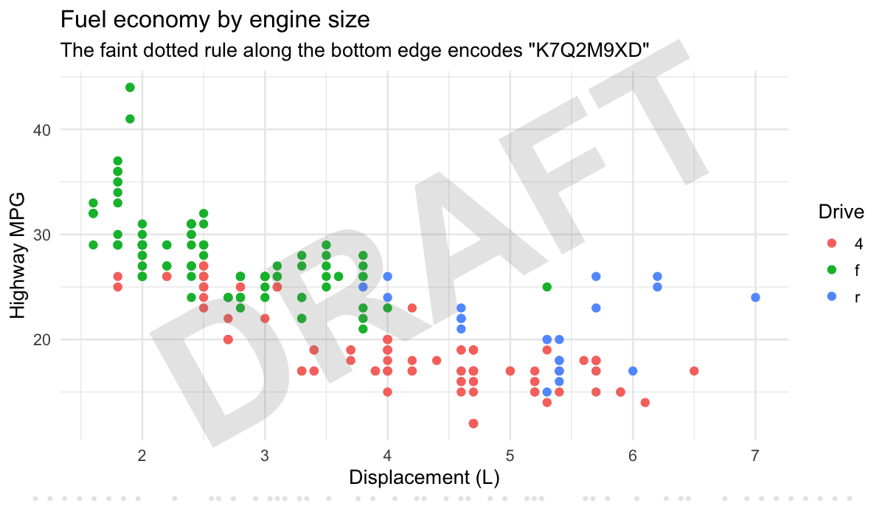

Trace every ggplot back to the code that made it.
Charts escape. They get screenshotted into slide decks, pasted into Slack, re-saved as JPEGs and forwarded until nobody knows which script, which data pull, or which version produced them. watermark stamps each plot with an ID you can read back out of the pixels, even after all of that.

Installation
# install.packages("pak")
pak::pak("despresj/watermark")Thirty-second tour
library(ggplot2)
library(watermark)
p <- ggplot(mtcars, aes(wt, mpg)) +
geom_point() +
watermark_dots("RUN-42") # just another + component
file <- tempfile(fileext = ".png")
ggsave(file, p, width = 7, height = 5, dpi = 150)
extract_watermark(file)
#> [1] "RUN-42"Now abuse it. Shrink it by half, pad it with window chrome like a screenshot, and push it through JPEG at quality 50:
img <- png::readPNG(file)
abused <- tf_jpeg(tf_pad(tf_resize(img, 0.5), 40), quality = 50)
extract_watermark(abused)
#> [1] "RUN-42"tf_resize(), tf_pad() and tf_jpeg() are the image transforms from the package’s stress-test suite.
Three kinds of watermark
| What it is | Survives screenshots | Carries | Use it for | |
|---|---|---|---|---|
watermark_dots() |
A faint row of dots in the bottom margin | ✅ | A short ID (up to 16 bytes) | Tracing any copy back to its source |
watermark_text() |
A visible stamp: diagonal, tiled, or corner | ✅ | Whatever you write | Deterring reuse: "DRAFT", "CONFIDENTIAL"
|
ggsave_watermark() |
Dots plus PNG metadata | Dots only | ID, timestamp, title, versions, any fields you add | The full provenance record for the original file |
All three are drawn relative to the whole figure, never the data. They don’t touch your scales, axes, coordinate system or facets, and they work the same on coord_flip(), coord_polar(), facet_wrap() and discrete axes.
Visible stamps
base <- ggplot(mtcars, aes(wt, mpg)) + geom_point() + theme_minimal()
stamps <- list(
base + watermark_text("DRAFT"),
base + watermark_text("INTERNAL", position = "tile"),
base + watermark_text("fig 2 · v3", position = "bottomright")
)
Visible text stays out of the strip reserved for the dot code, so you can stack a stamp and the dots in any order.
Provenance on save
ggsave_watermark() is a drop-in for ggsave(). It adds the dots and writes a provenance record into the PNG itself:
id <- ggsave_watermark(
file,
ggplot(mtcars, aes(wt, mpg)) + geom_point() + labs(title = "Weight vs MPG"),
metadata = list(script = "analysis/fig2.R", commit = "9f3c2e1"),
width = 7, height = 5, dpi = 150
)
str(read_watermark_metadata(file))
#> List of 6
#> $ id : chr "8440WHWR"
#> $ created : chr "2026-09-29T08:14:29-0400"
#> $ title : chr "Weight vs MPG"
#> $ software: chr "R 4.6.1; ggplot2 4.0.3; watermark 0.1.0"
#> $ script : chr "analysis/fig2.R"
#> $ commit : chr "9f3c2e1"Metadata is rich but fragile: a screenshot throws it away. The dots are terse but tough. Together you get the full record when the original file travels and the ID when only the pixels do. Keep a log of id, commit and script, and any stray copy leads back to its source.
wm_id() # 8 chars of Crockford base32 (40 bits); never I, L, O or U
#> [1] "W0YTF54Z"
wm_uuid() # for metadata; too long for the dots
#> [1] "390335bc-aba8-483c-a784-6135295a5638"IDs come from a private random stream. set.seed() in your analysis won’t repeat them, and generating them won’t disturb your seed.
How the dot code works

Each dot position is one bit; a dot means 1, a gap means 0. The frame is:
-
Start sync,
1010…: eight evenly spaced dots. The decoder uses them to lock on and measure the pitch, so it doesn’t care about image size. - Length byte, then the payload (the ID’s UTF-8 bytes).
- CRC-8 over length and payload.
-
End sync,
…0101. The frame’s first and last bits are both 1, so the outermost dots mark the frame edges.
Decoding scans every row of the image. For each one it compares pixels with their local neighbourhood (so borders and UI chrome don’t confuse it), finds the start sync, samples each bit position, and accepts the row only if both syncs, the length and the checksum all agree. That is 40 check bits, so a decode is exact or NULL: it doesn’t guess.
How tough is it?
A 7 × 5 in plot saved at 150 dpi, pushed through 32 transformations. Every row is recomputed each time this README is knit, and the same matrix runs in test-robustness.R on every push, on several plot types.
| Transformation | Pixels | Dot code | |
|---|---|---|---|
| Lossless | Original PNG | 1050 × 750 | ✅ recovered |
| PNG re-save | 1050 × 750 | ✅ recovered | |
| Compression | JPEG quality 95 | 1050 × 750 | ✅ recovered |
| JPEG quality 75 | 1050 × 750 | ✅ recovered | |
| JPEG quality 50 | 1050 × 750 | ✅ recovered | |
| JPEG quality 25 | 1050 × 750 | ✅ recovered | |
| JPEG q75, re-encoded 10 times | 1050 × 750 | ✅ recovered | |
| JPEG -> PNG -> JPEG | 1050 × 750 | ✅ recovered | |
| Resize | Downscale to 75% | 788 × 562 | ✅ recovered |
| Downscale to 50% | 525 × 375 | ✅ recovered | |
| Upscale 2x (retina) | 2100 × 1500 | ✅ recovered | |
| Odd scale 0.83x | 872 × 622 | ✅ recovered | |
| Downscale to 640 px wide | 640 × 457 | ✅ recovered | |
| Crop & frame | Crop top 30% | 1050 × 525 | ✅ recovered |
| Pad with light UI chrome | 1170 × 870 | ✅ recovered | |
| Pad with dark UI chrome | 1170 × 870 | ✅ recovered | |
| Screenshot chain (2x, pad, 0.5x, JPEG 80) | 1130 × 830 | ✅ recovered | |
| Colour | Brightness +5% | 1050 × 750 | ✅ recovered |
| Contrast 70% | 1050 × 750 | ✅ recovered | |
| Gamma 1.8 | 1050 × 750 | ✅ recovered | |
| Grayscale | 1050 × 750 | ✅ recovered | |
| Inverted (dark mode) | 1050 × 750 | ✅ recovered | |
| Posterize to 32 levels | 1050 × 750 | ✅ recovered | |
| Degrade | Gaussian noise sd 0.01 | 1050 × 750 | ✅ recovered |
| Box blur radius 1 | 1050 × 750 | ✅ recovered | |
| Social re-share (0.6x, JPEG 70, x3) | 630 × 450 | ✅ recovered | |
| Past the limits | Crop bottom 5% | 1050 × 713 | ✖ not found |
| Crop left 10% | 945 × 750 | ✖ not found | |
| Rotate 90 degrees | 750 × 1050 | ✖ not found | |
| Brightness +15% (dots clip to white) | 1050 × 750 | ✖ not found | |
| JPEG quality 5 | 1050 × 750 | ✖ not found | |
| Downscale to 25% | 262 × 188 | ✅ recovered |
27 of 32 recovered exactly, and 0 wrong IDs. The rows under “past the limits” mark where the guarantee ends. A result there is either exact or nothing:
- The dot strip must survive. Cropping the bottom edge or either side removes part of the frame; there is no partial recovery.
- No rotation. Rows are scanned horizontally.
- Minimum size. This 8-character ID decodes reliably down to about 280 px wide, and sometimes lower. Shorter IDs go further; 16-byte IDs need about twice the width.
- Compression. JPEG holds down to about quality 8.
-
Brightening past about +8% clips the faint dots to white. Raise
alphaif your plots will be edited heavily.
Watermarks here are for provenance, not security. Anyone who knows the dots are there can crop or paint over them. The point is that ordinary sharing doesn’t destroy them.
Related work
- ggplot2, which this extends.
- Steganography packages hide data in the least significant bits of pixels, which a single JPEG pass or screenshot destroys. watermark trades capacity for survival.
Contributing
Bug reports and ideas are welcome in the issue tracker. Run the test suite with devtools::test(); the robustness matrix lives in tests/testthat/test-robustness.R.